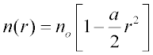
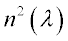
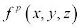

Gradient Index (GRIN) materials have indices of refraction that vary as a function of position within the material. Consequently, light does not necessarily follow a straight line while propagating through the material.
The more common types of GRINs are axial, radial, and spherical:
In ASAP a
GRIN function must be written in the form,

is the
GRIN function of both wavelength and position,

is a function describing the index variation with wavelength, and

is the function describing the positional variation.
is a tabular function specified on the
MEDIA command itself. The
function is usually specified by the surface GENERAL command, which permits the direction input of polynomial coefficients. This function and the stepsize used during the ray trace are specified with the GRIN option on the MEDIA command.